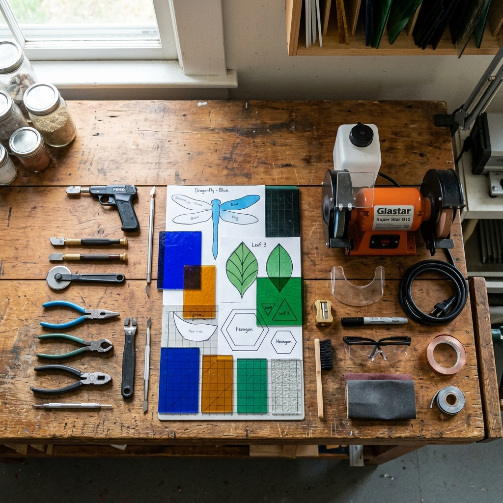
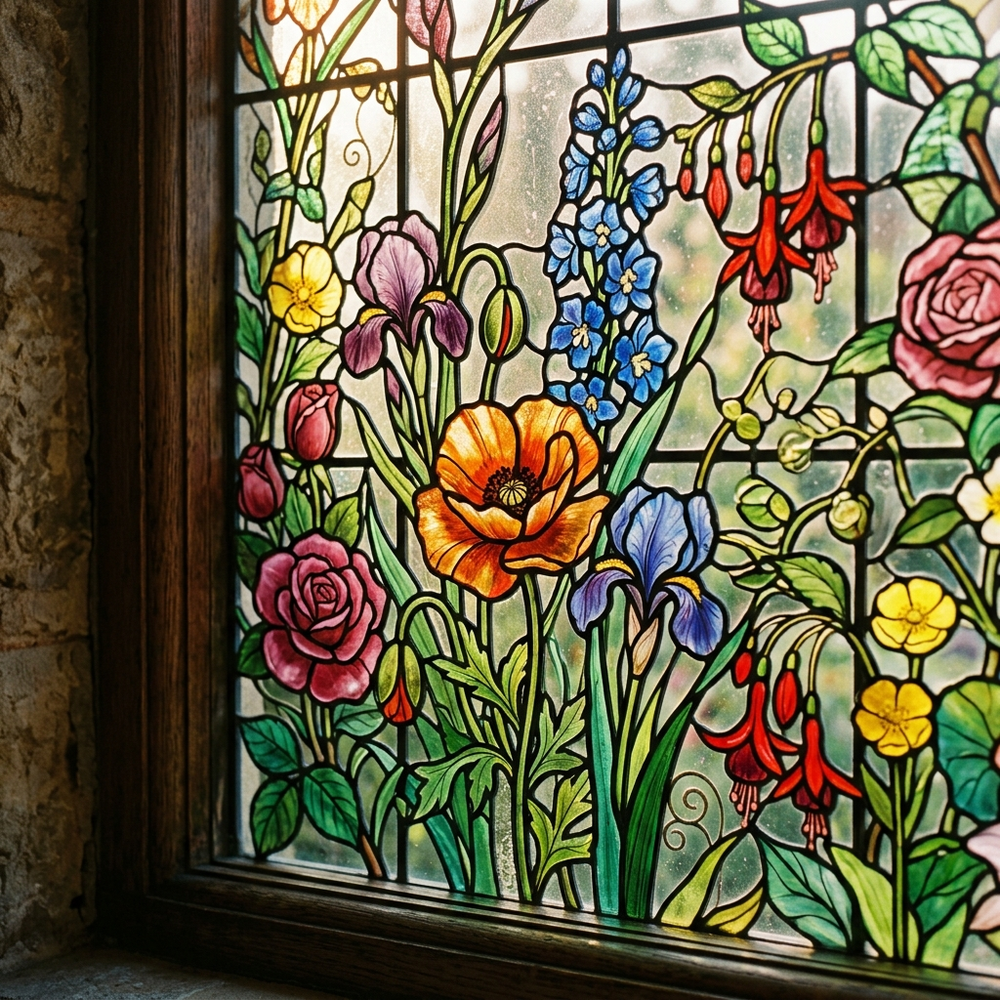

Preserving Heritage
EXPERT RESTORATION
Time, weather, and gravity eventually affect all stained glass. We meticulously clean, repair, and rebuild historic and residential panels to ensure they survive for generations.
Signs Your Glass Needs Repair
Stained glass typically requires re-leading every 80 to 100 years. Look for these common indicators that your window requires professional studio attention.
Bowing & Bulging
Over time, the weight of the glass causes the lead matrix to warp, creating a noticeable bulge that stresses the glass.
Cracked Pieces
Individual glass pieces that are cracked, chipped, or missing entirely due to impact, thermal stress, or building shifts.
Deteriorating Cement
The waterproofing putty between the glass and lead dries out and crumbles, leading to rattling glass and water leaks.
Oxidation & Grime
Decades of pollution, nicotine, and candle soot that obscure the true colors and limit light transmission.
Our Studio Process
Documentation & Removal
Before a panel leaves its frame, we thoroughly photograph it in situ. Once safely in the studio, we create multiple charcoal rubbings of the lead matrix to ensure the original artist's pattern is preserved with absolute accuracy.

Dismantling & Cleaning
The panel is soaked to soften the century-old cement. We carefully peel away the oxidized lead came to free the original glass. Each piece of glass is chemically cleaned by hand to remove grime and old paint splatters without harming the fired details.
Glass Matching & Re-Leading
Missing or shattered pieces are replaced using glass sourced globally to match the exact texture, density, and color of the original. The panel is then rebuilt on the rubbing using fresh, structurally sound lead came.


Soldering & Weatherproofing
Every joint is soldered on both sides. A specialized waterproofing cement is firmly pressed between the lead flanges and the glass. After curing, the panel is cleaned with whiting powder and polished to a dark, lustrous finish.
Historical Conservation
We specialize in large-scale restorations for churches, historic public buildings, and registered heritage homes. We adhere strictly to conservation guidelines, prioritizing the retention of original glass and fired paintwork while updating structural support systems to prevent future bowing.
- Complete Cathedral Window Re-leading
- Painted Glass Re-firing & Preservation
- Protective Storm Glazing Installation
Residential Repair
From a rattling front door transom to a cracked cabinet insert, no repair is too small. We offer in-home removals and can often execute minor drop-in repairs directly in your home without needing to fully dismantle the panel in the studio.
- Door & Transom Stabilization
- Single Cracked Glass Replacement
- Re-puttying for Draft Prevention
Restored Masterpieces



Get a Free Repair Estimate
Please provide details about your damaged glass. For the most accurate quote, include approximate dimensions and describe the issues (e.g., bowing, missing glass, rattling).